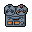
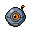
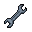
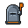

Phase 15, lane 12. Four Dock items had a text glyph and no sprite. Each kind has two candidates, drawn by PixelLab in the D1 Workbench+ mold at 32 x 32 (create_object_pro_flash, view side, style reference dock-people.png). The pick has the ember outline. Ground: the Dock steel (#9ea4b0) and the desk (#3c4454), at 1x and 2x.



| Item | Before | A | B | Why the pick |
|---|---|---|---|---|
| Intelligence | ◈ | PICK: clipboard |
The brief and follow-through read as a page with a check. One ember accent (the check). The bulb is mostly ember glow, so it is louder than the rest of the Dock. | |
| Desk memory | ◎ | PICK: chip |
One kind, one silhouette: the world memory sprite is a chip (A0 ruling). The card index is a cabinet, the same silhouette as Parked and Needs you. | |
| Delivery | ▤ | PICK: outbox |
 |
An envelope that goes out of the tray: the board of sends. The mailbox reads as a letter that comes in. |
| Panes | ⧉ |  |
The old glyph drawn in steel: two windows, one in front. The monitor competes with Floor (a grid). |
Spend: 8 calls, 40 generations (get_balance before: 290 used of 2000; credits $0.00). PixelLab object ids are in README.md.